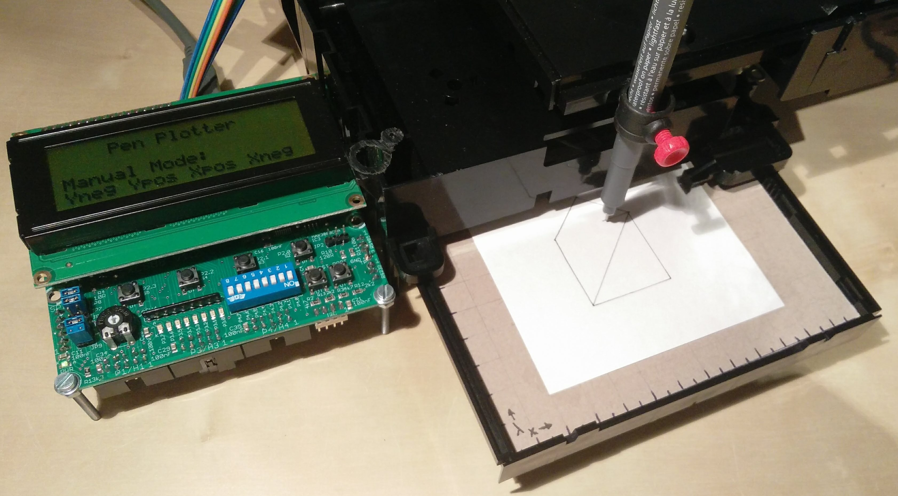
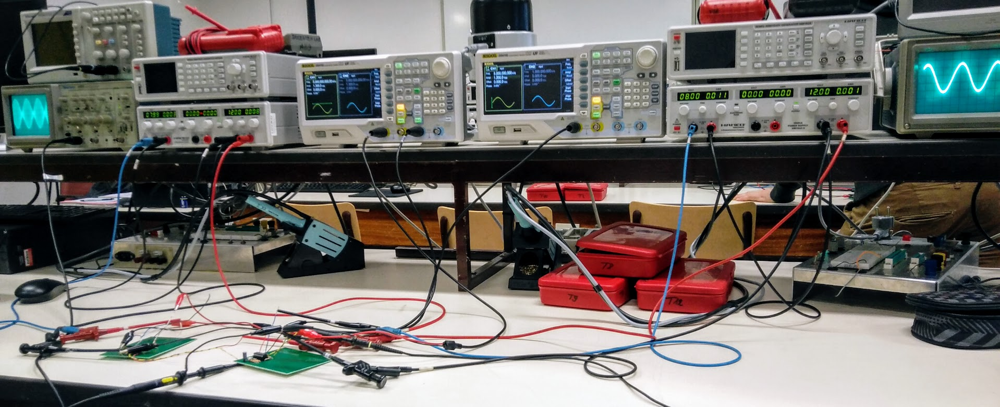
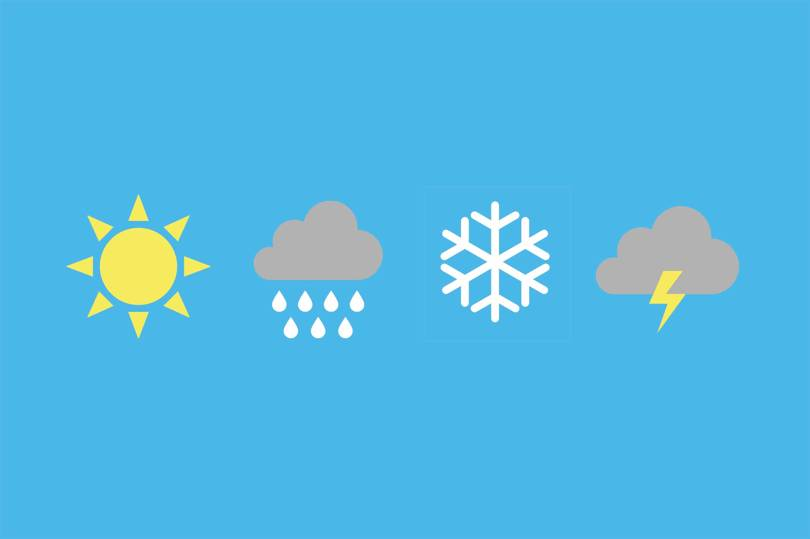

Recordio
Recordio is an alarm clock radio using the new Digital Audio
Broadcasting (DAB+) standard. Its name is a contraction of
'Record your radio', what refers to the storage capabilities
of the radio. A user can choose to record his favourite
program, and listen to it later on.
The radio is controlled by the STM32F746NG board from ST,
connected trough a PCB shield with a T3B DAB module from
KeyStone. I designed the PCB myself with KiCAD and have
written the software with CubeMX and TouchGFX from ST.
Keep up with my progress on Github. 

Pen Plotter
A pen plotter is a robot whose sole function is to guide
a pen. It is capable of drawing essentially anything that
can be composed from a set of lines. Your desired text or
drawing must first be converted to G-Code. The data will
then be read into the controller, after which the chosen
pen can be correctly driven.
It is made with two old DVD players placed perpendicular
on each other, driven by stepper motors. All controlled
by an XC888 controller, which I programmed in assembly.

Circuitry
I have build various electronic circuitery during my studies.
From instrumentation/multistage amplifiers to voltage regulators
and a BAM modulator-demodulator. In the picture on the right
you can see the modulation of a BAM signal on the left, which
is being demodulated again on the right. Schematics on Git.

Weather Station
View the current weather and forecasts
by using an GUI on the touch screen
of the STM32F749NG discovery board.
Data is obtained via Weather API from
OpenWeather using TCP/IP protocol.
View my code on Github.

Web Development
Using the latest web technologies, I
programmed a few websites during my
free time. Including this website!
I also made a webshop complete with
a shopping cart and payment system.
You can find all my websites here.
Knowledge
Digital and analog electronics
Embedded systems
Circuit design
Datacommunication
Signal processing
Measurement technology
Industrial networks
Skills
Embedded C
Assembly
VHDL
PLC: LAD & STL
PCB design
SPICE
Web development: JS
Education
PBA Elektronica-ICT TMMA SKW
Driver license B
Willing to get KNX, VCA, ...
Language
Dutch (Moedertaal)
English (Excellent)
French (Un petit peu)
Machinery
Measuring equipment
Oscilloscope
Logic Analyzer
Spectrumanalyzer
Function generator
Soldering station
Reflow oven
Pick and place
Programs
Visual Studio
System Workbench
STM32CubeMX
Vivado
KiCAD
PSpice
Putty & Tera Term
Microsoft Office
Controllers
XC888 (8 bit)
STM32F7 (32 bit)
Artix-7 (FPGA)
S7-300 (PLC)
Ardiuno UNO
Belgium, Londerzeel
Embedded Electronics
wardlefevre@pm.me
0471 30 44 00
Repositories